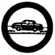

Automobiling
- Carefully examine and check conditions of the following features of an automobile:
- Windshield wiper
- Adjustment of rear-view mirror
- Headlights for all headlight switch positions; reflector surfaces; cleanliness
of lenses and that bulbs are free from blackening
- Elevation an focus of headlight beams
- Tail and stop lights
- Windshield and rear window visibility
- "Play" in steering wheel
- Adjustment of brakes
- Tires
- Do the following:
- List ten (10) important motor vehicle regulations in your province or
city.
- Give the necessary qualifications (including age) before a person can
legally drive a vehicle in the Philippines.
- Explain how drinking intoxicating liquor increases vehicular accidents as,
for example, its effects on the driver's vision, judgment, and coordination.
- Tell how many meters a driver on a dry road with brakes in good condition
who sees danger ahead, is required to stop his car running 30 kilometers an
hour; 50 kilometers; 70 kilometers.
- Do the following:
-
- Name at least six (6) sound driving practices which make for safety
and courtesy on the road.
- Name at least four (4) important characteristics of a good driver.
- Demonstrate hand signals, using both single hand position, and three
position systems; give the meaning of each.
- Explain:
- The purpose of clutch, gear shift, accelerator, choke, and brakes;
describe briefly how each works.
- How to stop a car on a wet or muddy road.
- What to do when end skids to the right; to the left.
- What to do when stop lights of a car ahead blinks.
- What to do when a blow-out occurs at high speed.
- Interpret readings of different gauges and meters on panel board.
- Change a tire.
-
- Start a motor; put car in gear; shift gears.
- Come smoothly to full stop form speed of thirty (30) kilometers
an hour.
- Make right and left turns from proper traffic lanes, giving proper
signals at proper time.
- Park in a space of eight (8) meters.
- Start a car after stopping on an upgrade (away from curb); park
on an upgrade and on a downgrade. Show how to get off sand and mud.
- Turn around in order to go in opposite direction between lines or
marker nine (9) meters apart.
- Back up a car parallel to a curb.
- Demonstrate his ability to stop a car going at a speed of 30 kilometers per hour so that nose of car fits into a chalk-marked U-shaped box two (2) meters wide. Bumpers would be over front line of the box and tires inside sidelines.
|